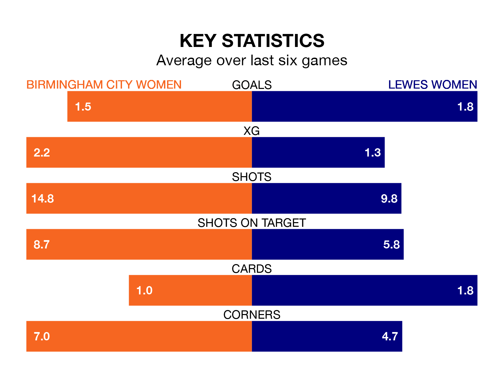

Struggling Lewes Women face Birmingham City Women away at St Andrew's on Sunday looking to build on a win in their last league outing.
After securing all three points with a 2-1 victory over Watford Women on March 17, Lewes sit 11th in the FA Women's Championship.
They travel to play a Birmingham City side fifth in the standings, who also won their last match, 4-0 against Reading Women, on Wednesday.
With 29 goals in 17 games so far this season, Birmingham City are the league's third-highest scorers with 1.7 goals per game. And they are conceding fewer than average, letting in 14 goals at a rate of 0.8 per game.
Lewes, meanwhile, are below average scorers, with 1.1 goals per game, compared to a league average of 1.3. They have conceded 1.7 goals per game.
With Lucy Thomas between the sticks, the Blues can rely on one of the league's safest pair of hands. She has kept seven clean sheets in her 17 appearances this season, and only one other 'keeper – Sunderland Women's Claudia Moan – has been able to prevent the opposition scoring on more occasions in the FA Women's Championship.
In the away side's net, Sophie Whitehouse has one clean sheet in 16 games. She has conceded a goal every 72 minutes, 80% more often than the 128 minutes between goals for Thomas.
In the last three years, Birmingham City and Lewes have played each other on three occasions. Birmingham City won one of them and they drew the other.
Their last meeting was on September 10, when they played out a 0-0 draw.
The hosts are in mixed form in the FA Women's Championship, with three wins and a draw from their last six games.
With two wins and two draws over that period, Lewes's form is slightly worse – they have taken eight points from 18, compared to Birmingham City's 10.
Updated: 10:19 (UTC), 22/03/24